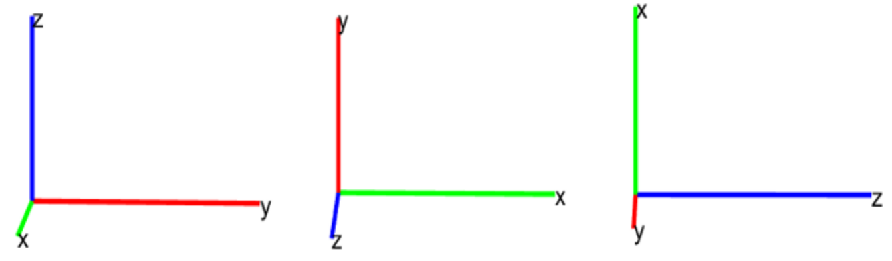

六自由度与轴系转化
坐标轴系
1. 地轴系$oxyz_g$：
固定于地面不动的坐标轴系。一般地，取地面某点（如起飞点）为坐标原点，x轴指向某一方向（如起飞方向），y轴垂直于轴指向右方，z轴垂直地面指向地心；
2. 体轴系$oxyz_b$：
坐标原点取飞机质心位置，ox轴沿无人机对称面指向前方，oy轴垂直于无人机对称面指向右方，oz轴在对称面内，垂直于ox轴向下；也称作机体坐标轴系；
3. 气流轴系$oxyz_a$：
气流轴系即风轴系，坐标原点取飞机质心位置，x轴沿无人机速度方向，z轴在无人机对称面内垂直于轴指向下方，y轴垂直于平面指向右方；
4. 航迹轴系$oxyz_k$：
坐标原点取飞机质心位置，x轴沿无人机地速方向，z轴在包含轴的铅垂平面内指向下，y轴在水平面内向右。
5. 稳定性坐标系$oxyz_s$：
原点：重心;x:未受扰动的速度在对称面内的投影;y:垂直于对称面向右;z:对称平面内垂直于x向下。
坐标转化
二维坐标转换
三维坐标转换
其中的一个隐藏条件：右手坐标系

绕x转时：A轴=y轴，B轴=z轴，
绕y转时：A轴=z轴，B轴=x轴，
绕z转时：A轴=x轴，B轴=y轴，
体轴→地轴(DCM)
偏航角$\psi$：机体轴$Ox_b$在水平面 $Ox_gy_g$ 上的投影与 $Ox_g$轴之间的夹角。右偏航为正。
俯仰角$\theta$：机体轴 $Ox_b$ 与水平面 $Ox_gy_g$ 之间的夹角。抬头为正。
滚转角$\phi$：飞机对称平面与包含$Ox_b$轴的铅垂平面之间的夹角。右滚为正。
地轴→体轴：
风轴→体轴
迎角$\alpha$：速度矢量 V 在飞行器对称平面上的投影与机体轴$Ox_b$之间的夹角。V在$Ox_b$下为正。
侧滑角$\beta$：速度矢量 V 与飞行器对称平面之间的夹角。V 在对称平面右方为正。
体轴→风轴：
角速度转化
地→体：
即
体→地：
飞行参数
分量定义
姿态角：即欧拉角，由地轴系与体轴系确定，包含三个角度：俯仰角$\theta$(抬头为正)、偏航角$\psi$(机头右偏航为正)、滚转角$\phi$(右滚转为正)；
气流角：由速度与体轴系确定，包括两个角度：迎角$\alpha$(V在机体轴x以下为正)、侧滑角$\beta$(V投影在飞机对称面右侧为正)；
机体坐标系速度分量：实际速度V相对于体轴系各轴的分量，分别为u、v、w；
机体坐标系角速度分量：角速度ω相对于体轴系各轴的分量，分别为p、q、r；
舵效正方向定义
纵向：俯仰力矩M——q——抬头为正——升降舵de——后缘下偏为正
横向：滚转力矩L——p——右滚为正——副翼da——右副翼下偏为正
航向：偏航力矩N——r——右偏航为正——方向舵dr——左偏为正
【所有舵效产生的效果均为负的力矩】
速度、角速度转化
动力学模型
机体轴-牛二定律
动量矩定理
动量矩计算
动量矩定义：$\overrightarrow{h_p}=\vec{r}_p \times \vec{V}_p d m$，其中$\vec{V}_p=\vec{V}+\vec{\Omega} \times \vec{r}$
即：$\vec{h}=\int \vec{r}_p \times\left(\vec{V}+\vec{\Omega} \times \vec{r}_p\right) d m=\int \vec{r}_p d m \times \vec{V}+\int \vec{r}_p \times\left(\vec{\Omega} \times \vec{r}_p\right) d m$
质量积分为$\int \vec{r}_p d m=\overrightarrow{r_c} m$，$r_c$为重心位置，重心取原点则$r_c$=0，否则此项不能省略
若坐标原点区在重心位置，表达式简化为：
动量矩定理
根据动量矩定理可得：
即
化简
带入$\vec{h}$可得：
两大定律的其他形式
补充方程
仿真计算流程